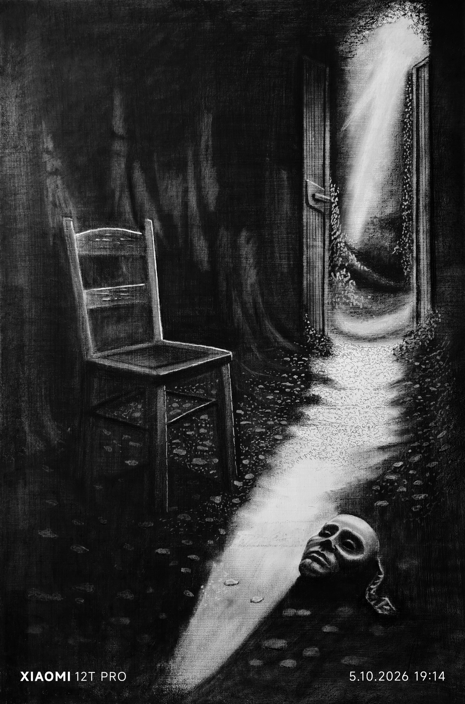

Maska
Beneath.Surface — psychologická symbolika.
Temná, symbolická tvorba o lidské identitě, maskách a skrytých stránkách našeho nitra.
Každé dílo otevírá otázku, na kterou si člověk musí odpovědět sám.

Beneath.Surface — psychologická symbolika.